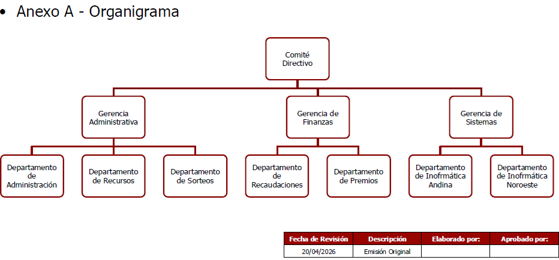
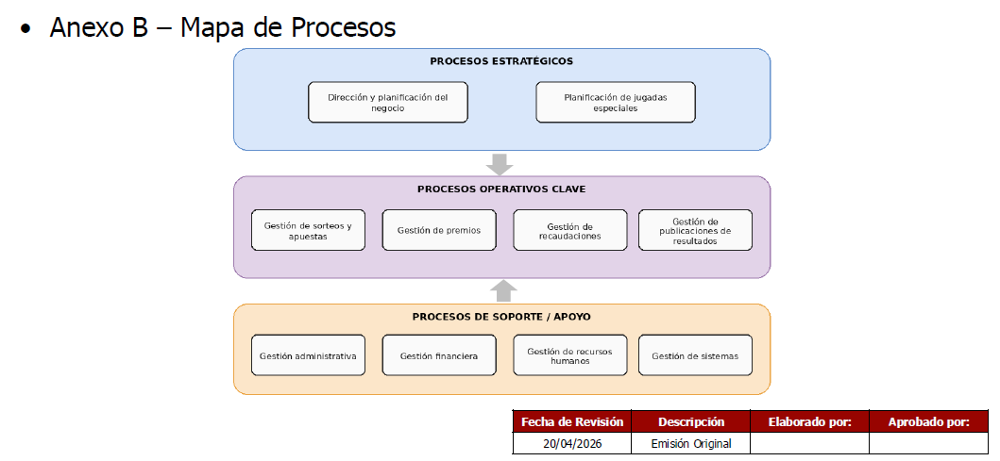

Informe de reconocimiento
El primer entregable formal del estudio preliminar. Define los límites, la estructura organizacional, el sponsor, el objetivo del mandato y el diagnóstico primario del sistema de información.
1. Concepto y propósito
Primer instrumento formal de validación entre el equipo de análisis y el sponsor del proyecto.
El Informe de reconocimiento (IR) o informe preliminar es la técnica para documentar la información obtenida durante la primera etapa de la metodología de sistemas (estudio preliminar o reconocimiento).
Es la primera aproximación a la organización, al problema y al sistema de información actual para validar el entendimiento alcanzado con el sponsor y delimitar el alcance del futuro desarrollo.
📌 Objetivos del reconocimiento
- Identificar a los actores clave de la organización.
- Determinar con precisión para qué nos llamaron (mandato).
- Conocer las necesidades y expectativas sobre el nuevo proyecto.
- Establecer las restricciones y supuestos del proyecto.
- Obtener un conocimiento general de las áreas afectadas.
- Definir los límites y alcance del sistema a construir.
👑 El Rol del Sponsor
El Sponsor es el rol clave de nivel gerencial o directivo que promueve, financia e impulsa el proyecto. Posee la autoridad interna para facilitar los recursos y asegurar que el proyecto sea exitoso en la organización.
2. Etapas del proceso de reconocimiento
Esquema funcional de Entradas, Procesamiento y Salidas en el relevamiento inicial.
Información inicial
- Objetivos de la organización.
- Contexto y marco regulatorio.
- Procesos de negocio generales.
- Reglas de negocio primarias.
- Necesidades manifiestas del cliente.
Obtención de información
- Entrevistas a la alta gerencia y sponsor.
- Relevamiento de la estructura formal (organigrama).
- Identificación de funciones y responsables por área.
- Detección de problemas y cuellos de botella.
- Observación directa del entorno de trabajo.
Entregable formal
- Informe de reconocimiento redactado.
- Carta formal dirigida al sponsor.
- Anexo A: Organigrama formal firmado.
- Anexo B: Mapa de procesos de negocio.
- Definición de las próximas áreas a relevar.
3. Estructura estándar del informe de reconocimiento
Apartados requeridos según la cátedra de Análisis de Sistemas de Información UTN.BA.
Carta formal dirigida al sponsor con síntesis del objetivo y solicitud explícita de validación.
Numeración detallada de secciones y folios de cada apartado e impresos anexos.
Razón social, tipo de sociedad (S.A., S.R.L., S.H.), rubro comercial y alcance de distribución geográfica.
Especificación concreta de para qué nos llamaron y quién ejerce la autoridad del proyecto.
Referencia al organigrama (Anexo A) y detalle de las funciones desempeñadas por cada departamento.
Referencia al mapa de procesos (Anexo B), lista de cuellos de botella y delimitación de áreas a relevar a continuación.
✉️ Carta de presentación al sponsor
Estructura y redacción formal requerida en el encabezado del informe.
De nuestra mayor consideración:
Nos dirigimos a usted con el objeto de hacerle entrega del Informe de reconocimiento correspondiente a la etapa de estudio preliminar del proyecto encomendado.
El presente documento consolida la estructura formal de la organización, las funciones de las áreas involucradas, los procesos de negocio observados y la lista de problemas y necesidades detectados en las primeras reuniones.
Solicitamos a usted tenga a bien revisar el contenido expuesto a fin de otorgar su validación formal o hacernos llegar sus observaciones antes de dar inicio al relevamiento detallado.
Sin otro particular, lo saludamos muy atentamente.
🔍 Sección de datos faltantes
Cómo explicitar las lagunas de información en enunciados de exámenes o prácticos.
Este ítem no se incluye en un informe profesional real remitido a la empresa. Sin embargo, en el ámbito académico (exámenes y trabajos prácticos), se utiliza para marcar que el analista identificó un vacío de información en el enunciado y debe regresar al cliente para relevarlo.
- "Falta especificar la función del Departamento de Recursos Humanos."
- "No se indica claramente la dependencia jerárquica del Sector Publicaciones."
- "Faltan los horarios de atención y el volumen diario de solicitudes procesadas."
Registrar el punto y programar una entrevista complementaria con el responsable del área correspondiente para completar el relevamiento antes de avanzar a la etapa de diseño.
6. Técnicas de relevamiento
Cómo recopilar información fidedigna durante las fases tempranas.
Las preguntas abiertas son ideales en la etapa inicial de reconocimiento para obtener un panorama general del contexto. Las preguntas cerradas se emplean posteriormente para confirmar datos cuantitativos o reglas de negocio precisas.
La revisión de formularios, planillas, manuales de procedimiento y la observación in situ permiten contrastar el proceso formal decretado contra la operativa real diaria.
Caso práctico: InfoLey Web
Informe redactado con base en la minuta de reunión del parcial K2001.
Fecha: 08 de Julio de 2024 | Analista: Equipo de Análisis de Sistemas
• Secretaría de Derecho Penal, Administrativo y Procesal: Recibir y publicar información jurídica.
• Oficina de Jurisprudencia: Registrar fallos de la Corte Suprema.
• Gerencia de Infraestructura: Administrar servidores y red.
- Falta de consistencia en el contenido web por desorganización en la carga.
- Omisiones en los procedimientos del Manual de Técnica Legislativa.
Caso práctico: Juegos del País S.H.
Resolución completa paso a paso según la guía del trabajo práctico N° 2.
Fecha de Revisión: 20/04/2026 | Versión: Emisión Original
- Gerencia Administrativa: Centralizar la administración de sucursales.
- Departamento de Recursos: Selección, evaluación y rotación de personal.
- Departamento de Sorteos: Definir sorteos, dar alta e ingresar números favorecidos.
- Gerencia de Finanzas: Centralizar las funciones de finanzas.
- Departamento de Recaudaciones: Consolidar saldos depositados y liberar pagos.
- Departamento de Premios: Procesar apuestas, determinar premios y emitir estadísticas.
- Sector Publicaciones: Publicar resultados.
- La base de datos debe ser MySQL o equivalente.
- El seguimiento debe cumplir con la Ley de Juegos y Casinos.


- Falta definir las funciones del Departamento de Administración.
- Falta definir las funciones de Informática Andina e Informática Noroeste.
- Falta indicar la dependencia del Sector Publicaciones.
✅ Checklist para evaluar tu informe
Asegurate de cumplir estos puntos antes de presentar tu entregable.